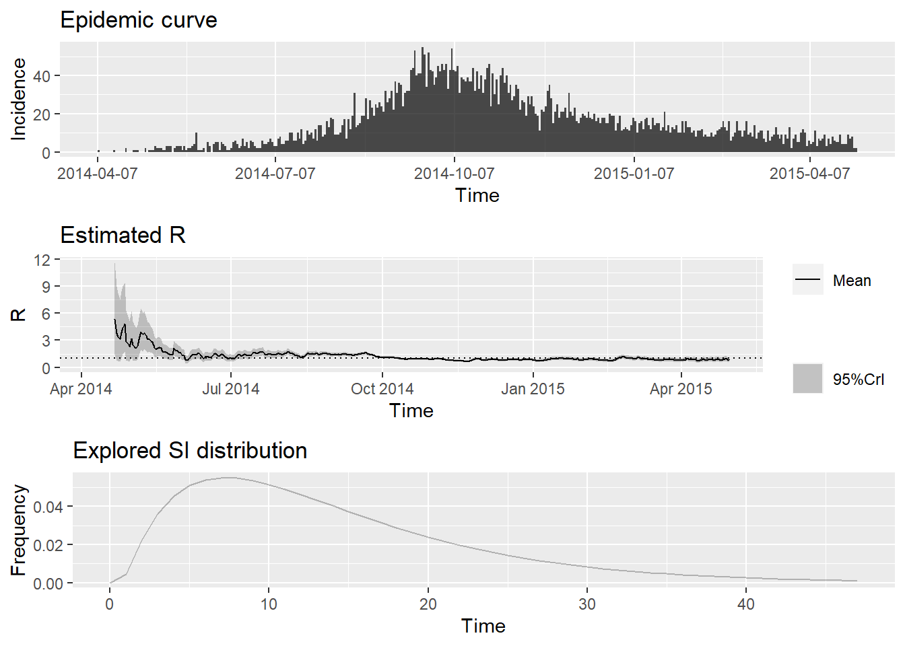

How to quantify the time-varying reproduction number (Rt) of the outbreak?
Published
July 18, 2023
Conditions: - Use the first list element from the Simulated Ebola outbreak ebola_sim_clean object from the outbreaks R package. The name of the first element is linelist. - Use the “date of onset” column to calculate the weekly growth rate. - Use the serial interval distribution parameters of Ebola Virus Disease estimated from the WHO Ebola Response Team in 2015 to quantify the time-varying reproduction number. - Assume a known mean and standard deviation values of the serial interval distribution to quantify the time-varying reproduction number.
A3
# Quantify the time-varying reproduction number (Rt) of the outbreak# Load required packageslibrary(outbreaks)library(incidence)library(epiparameter)library(EpiEstim)library(tidyverse)# Load the simulated Ebola outbreak datadata(ebola_sim_clean)# Extract the first element of the listlinelist<-ebola_sim_clean$linelist# Convert the data to an incidence objectincidence_data<-incidence::incidence(linelist$date_of_onset)# Extract parameter by disease, distribution, authorepidist_ebola<-epidist_db( disease ="Ebola", epi_dist ="serial_interval", author ="WHO_Ebola_Response_Team")# Estimate the time-varying reproduction numberepiestim_output<-estimate_R( incid =incidence_data, method ="parametric_si", config =make_config( mean_si =epidist_ebola$summary_stats$centre_spread$mean, std_si =epidist_ebola$summary_stats$centre_spread$sd))# Plot the time-varying reproduction numberplot(epiestim_output)

The outbreaks package is loaded to access the simulated Ebola outbreak data.
The epiparameter package is loaded to access the library of epidemiological parameters.
The ebola_sim_clean object from the package contains the simulated outbreak data.
The linelist object contains the first list element from ebola_sim_clean.
The incidence() function from the incidence package converts the vector date_of_onset from the linelist data frame to an incidence class object.
The epidist_db() function from the epiparameter package extract a parameter by specifying the disease name in the disease argument, epidemiological distribution in the epi_dist argument, and author name in the author argument.
The estimate_R() function from the EpiEstim package estimates the time-varying reproduction number (Rt). We provide the incidence_data, specify the method as "parametric_si" (parametric with a known serial interval), and pass the serial interval distribution parameters using the make_config function.
The plot function creates three plots from the estimate_R class object.
Please note that the code assumes the necessary packages are already installed. If they are not, you can install them using first the install.packages("pak") function and then the pak::pak() function for both packages in CRAN or GitHub before loading them with library().
Additionally, make sure to adjust the serial interval distribution parameters according to the specific outbreak you are analyzing.